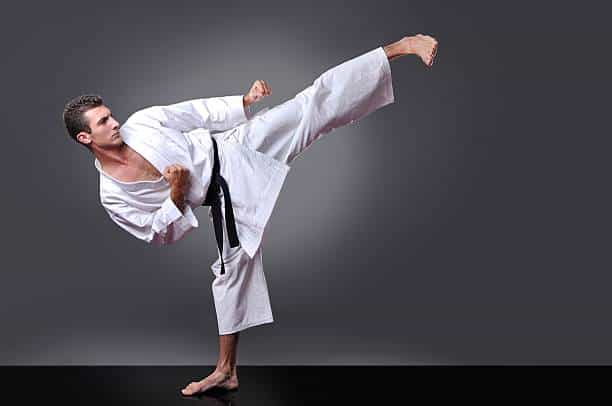
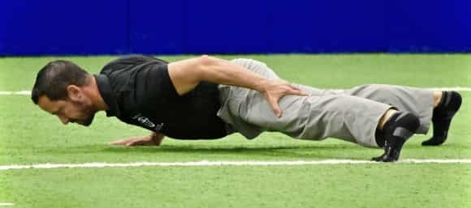
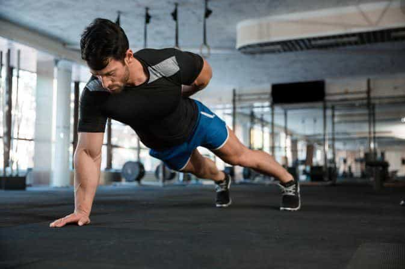
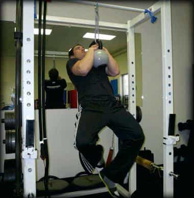
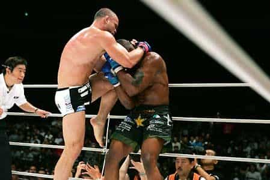
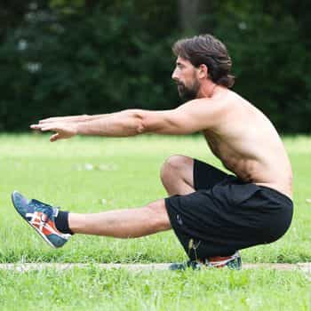
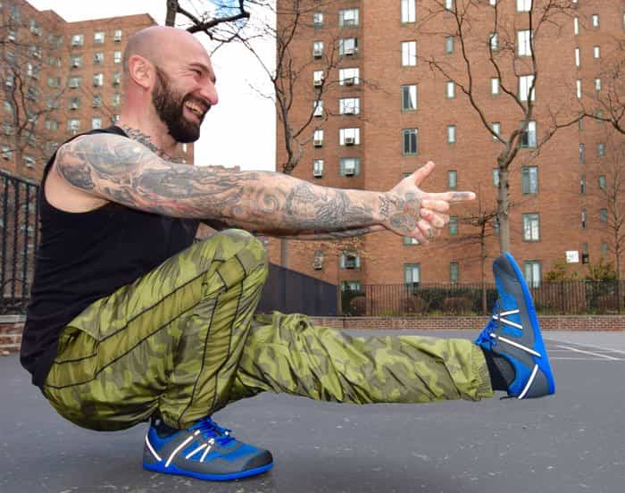

Many martial artists, whether currently practising or former practitioners, seek effective exercises that they can do to improve explosiveness, kinetic chain recruitment, mind-muscle connection, or dynamic flexibility and mobility.

After stopping karate in 2013 after having reached the level of Brown belt 2nd Kyu, I too sought ways to maintain or improve my martial skill even while not actively practising a martial art anymore. In the 5 years since I stopped, I have participated in a few different sports (namely gymnastics, track and field, swimming, basic) and based on my experience in these I have compiled a list of exercises that I believe are important for a martial artist to have in his repertoire:
1. One-arm pushups (Punching)
This exercise will add both size and functional strength to your guns to ensure they not only look the part but can fire too! Granted, not everyone will have the necessary skill or strength to perform these, and to those people I recommend first getting to the level where you can do either about: 20 explosive pushups in one set (that’s about how many I do); 12 elevated pushups (close or wide-grip) per set; or 10 handstand pushups against a wall.
Regardless of the intermediate difficulty level of this exercise, once you are able to perform it with proper form, you will reap many benefits.
How to do it

Start in a normal pushup position with your feet slightly wider than shoulder width. Now grab the back of your corresponding leg with one arm (i.e. left arm grabs left leg or right arm grabs right leg) so that you are supporting your bodyweight with just one arm.
In order to remain balanced when doing the pushups you will need to bring the foot of the opposing leg forward a bit. You will also need to rotate your pushing hand anticlockwise to a 10-to-9 position. Now lower your body to the floor slowly, keeping your pushing arm slightly to the side of your torso and in line with your middle chest.
Once you get to the bottom position, push back up keeping your body parallel to the floor until you reach full extension of the arm after which you can rotate outward with your body.

Check out my proper form, bitches…
Once you can do the above variation, try putting your non-pushing hand behind your back. This is the “proper” form for the handstand pushup and will be more challenging than the first variation. Once you’ve mastered the “proper form”, you could raise the difficulty level by elevating your feet, trying explosive one-arm pushups.
2. Clinch pullups (Pulling/Clinching/Wrestling)

Just as the name implies, these are pullups performed with the hands and arms in the same position as they would be in a Muay Thai clinch. This is typically achieved through the use of a kettlebell, as it provides a very similar round (though not identical) surface to a human neck.
However if you’re like me and you do not have access to a kettlebell and rope/cable but you have a pullup bar (preferably with a neutral grip) you could simply do normal neutral-grip pullups or even better, do neutral-grip pullups with both hands on one grip handle if possible.
How to do it
Start with your hands in either the normal neutral or normal single-handle grip. Bring legs off the floor and go into either dead-hang position or bent-arm (depending on your ability)
Now do your pullups (bring chest to the bar and if doing the single-handle grip version then you’ll need to bring your head to either side on your way up). You could also get into the top position and hold for as long as possible (as in a clinch)

Once you are able to do about 10 of these you should have enough strength to be a decent clincher and a more formidable adversary for your opponents or sparring partners.
3. Pistol Squats (Kicking/Stability/Dynamic flexibility)
Perhaps many of you know of this one, but do you know why it is called a pistol squat, and the correct form for it? The pistol squat is a genuinely challenging exercise, even for seasoned lifters. This is due to the fact that it is a unilateral exercise (like the one-arm pushup) and thus works differently than your normal two-legged squats. It forces you to balance while engaging your calves, quads, hamstrings and core muscles.
How to do it

Start by finding your balance on one leg, keeping the other leg off the floor but against your standing leg. Your non-standing leg should be bent. Now slowly raise your non-standing leg while keeping it bent. Try to get your femur (thigh-bone) and tibia (shin bone) above parallel to the ground by squeezing your quads to straighten your leg.
Lift and straighten either both arms or just the arm on your non-standing-leg side, so that your fingers point straight forward. If you want you can bend your other arm (standing-leg side) inwards to your chest, grabbing your opposite shoulder (this will provide more stability).
Now lower yourself on your standing leg, aiming to keep your other leg parallel to the floor throughout the movement. Try and get your butt to the floor (this is harder than it sounds and can be taxing on the knees, so go slowly!). Once you get to the bottom, straighten your pushing leg to raise yourself back to the starting position.
Once you can do this beginner variation, you are ready to do the “proper” pistol squat: keeping both arms straight out with hands together as if you’re holding a pistol (hence the name “pistol” squats) and pretending to shoot someone.

The indescribable joy of finally nailing this exercise…
Once you have reached this point you might actually find it easier to lower your butt to the floor when squatting, but for safety reasons I recommend trying the first two variations before the “proper” one, to build up the mind-muscle connection and muscle memory for proper execution.
Conclusion
The above mentioned exercises are ones that I’ve found to be the most effective for developing functional martial arts strength apart from the more traditional exercises that everyone knows and does (normal pushups, squats, horse stance, skipping, etc.). With these exercises I’ve been able to satisfy my “craving” for martial arts training while still getting in one hell of a workout, all without having to travel to and from a gym.
I hope you guys enjoyed this article, and most importantly that you learned something from it. Also, don’t forget to check out my website Mansculinity.com for more articles like this in future.
Read Next: 13 Martial Artists You Can Draw Inspiration From